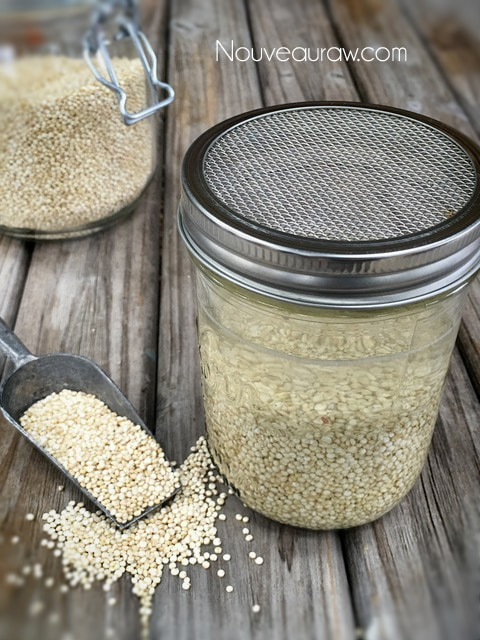
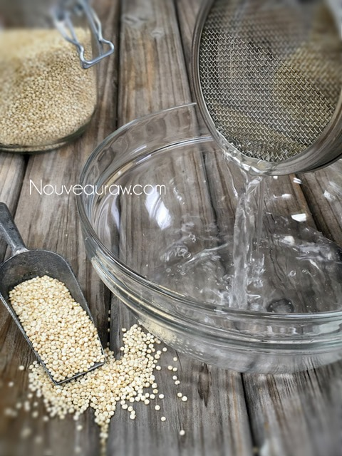
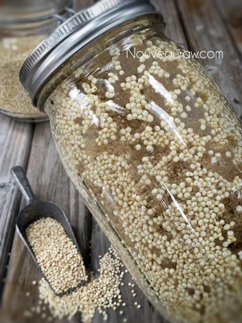
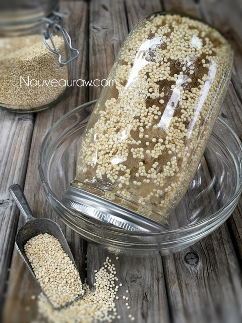

Quinoa Rejuvelac

~ raw, vegan, cultured, gluten-free ~
What is rejuvelac? It is a fermented drink that is a rich source of probiotics, including Lactobacilli and Aspergillus oryzae. Rejuvelac is a drink made from cultured quinoa, hulled millet, short brown rice, buckwheat, barley as well as other grains.
Because it contains a high level of enzymes, it aids in digestion and rejuvenation. It is also filled with vitamins B, C, and E, and provides friendly bacteria necessary for maintaining a healthy colon and eliminating toxins from the body.
You can use many different grains when fermenting rejuvelac, such as whole wheat, oats, rye, barley, millet, fruit to buckwheat, rice, and other grains. It’s a personal preference. I chose to use quinoa since it is gluten-free and is one of the quickest ones to make. If you use other grains, the sprout times will vary, and so will the taste.
See those bubbles?
Do you see those little bubbles that have collected at the top of the jar? That my friends are a good sign of fermentation. We want to see these little guys and rejoice in their presence.
How to use Rejuvelac
Use 1/4 cup in smoothies, add to vegan cheeses, and any other recipes by replacing the liquid with rejuvelac. Use it to start all of your fermentation processes when making nut and seed cheeses. It contains Vitamin E, which stops the fats from oxidizing. It’s also great for digestion and is helpful to drink some about 20 minutes before eating. If you use for drinking, you can add ginger, cinnamon, mint, lemon, lime, honey, fruit to improve the taste. Drink rejuvelac first thing in the morning as well as before or between meals for optimal results. It is best consumed in smaller quantities rather than large glasses, especially if you are new to drinking it.
Yields 4 cups
Preparation:
Rejuvelac is a fermented beverage, make sure all equipment is clean before using it to avoid culturing harmful bacteria.
Sprouting quinoa:
- Rinse the quinoa in a mesh strainer; this is an important step that removes saponin, which is on the surface of the quinoa.
- Place the rinsed quinoa in a quart jar with enough water to cover it and about 2″ extra of water on top.
- They don’t swell in size, so we don’t need an abundant amount of water.
- Place a breathable cloth on top and secure it with a rubber band.
- You can use a tight weave of cheesecloth or a sprouting mesh lid used for sprouting.
- Let it sit for 8-12 hours.
- After they are done soaking, drain the water from the quinoa, set the jar inside of a bowl, letting it rest at a 45-degree angle.
- The excess water will drain off, eliminating the chance of mold.
- Instead of pouring the water down the drain, you can use it to feed your plants.
- Rinse and drain the grains twice a day until you see sprouts—quinoa sprouts in less than 24 hours, but can take 1-3 days depending on the room temperature, light, quality of grains, etc.
Culturing Rejuvelac:
- Fill the jar with 4 cups of water, cover with a lid, and leave at room temperature (out of direct sunlight) for 2 to 3 days.
- When it’s done, it smells like baking bread (yeasty) and has a slight taste of lemon. If it develops mold or it has a putrid or very sharp odor, throw it away.
- The water will also turn cloudy and bubbly. It will also be slightly carbonated
- The culturing time can vary based on how warm or cold your house is.
- Remove the quinoa and place the liquid in the fridge, which is now lactic acid-rich rejuvelac.
- The leftover seeds can be used one more time, to make another 4 cups of rejuvelac. This time it will culture in 1 day, so we don’t have to go through the sprouting step again. Compost the seeds after this round.
- The rejuvelac keeps in the refrigerator for 3 to 4 weeks.
- The odor and flavor will change from day to day. Day on is the strongest; from there, it becomes more mild and lemony. I suggest using longer Rejuvelac when using it for making cheese since it is milder in flavor. You can tell when it’s off. Don’t drink it if it smells or tastes iffy.
- It’s natural for a layer of white foam to form on top, which you can drink or skim off. If it is fuzzy… that is a sign of mold, and it should be tossed.




© AmieSue.com